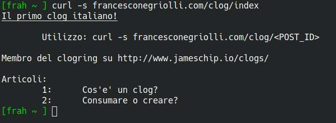

Ok, questa è una di quelle cose decisamente poco utili che mi piacciono tanto.
Guardandomi intorno nel social mastodon mi sono imbattuto in un toot di James Chip, in cui scrive di aver creato un piccolo blog leggibile tramite curl direttamente da terminale: da qui il nome "clog" (curl + blog).
L'idea mi è piaciuta immediatamente, e mi sono fiondato a replicare l'idea sul mio server: se utilizzi linux (e dovresti) puoi anche leggere il contenuto del mio clog utilizzando il comando
curl -Ls francesconegriolli.com/clog/index

Molto probabilmente questa idea non avrà un grande successo, ma il concetto alla base resta valido: less is more.
Non è necessario avere un sito estremamente complicato per condividere le proprie idee, alla fine i concetti fondamentali restano confinati nella parte testuale di un blog! Quindi perchè non scriverne uno in cui viene eliminato ogni elemento non essenziale, salvando solamente il succo del discorso?
Certo, quasi nessuno leggerebbe un intero blog scritto in questo modo "arcaico". Ma come ho detto, ho trovato interessante l'idea e mi ci sono buttato: in questo, come in altri casi, l'utilità viene messa in secondo piano, favorendo la voglia di smanettare.
Se anche tu vuoi unirti alla rivulozione dei clog, è sufficiente aggiungere al tuo sito una cartella clog, contenente un file index e tanti file numerati quanti saranno i tuoi articoli, senza nessuna estensione.
L'indice conterrà le istruzioni per l'utilizzo, e una lista di articoli, ognuno con il proprio ID, corrispondente al nome del file contenente l'articolo in questione.
In questo modo, per accedere al clog sarà sufficiente usare il comando
curl -Ls iltuosito.com/clog/index
e per accedere agli articoli
curl -Ls iltuosito.com/clog/ID_articolo